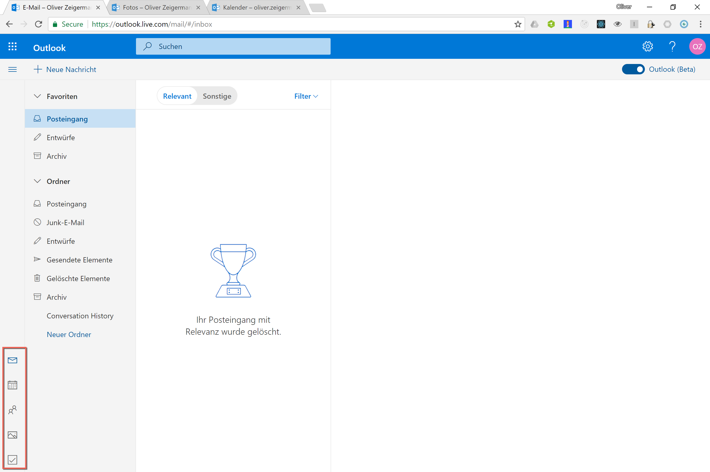
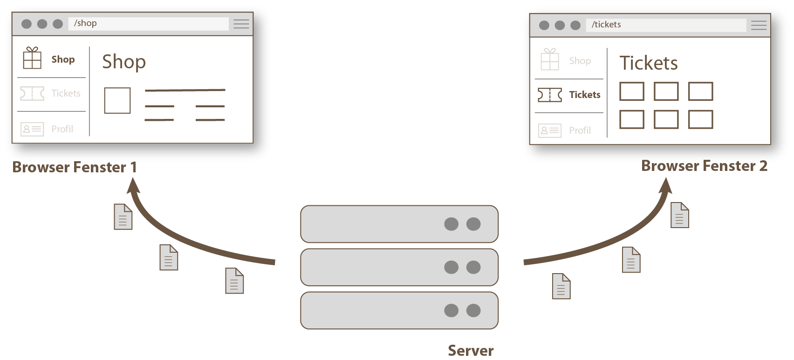
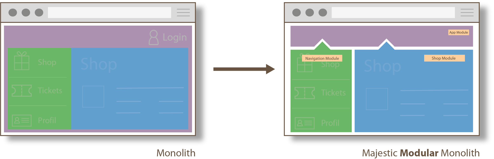
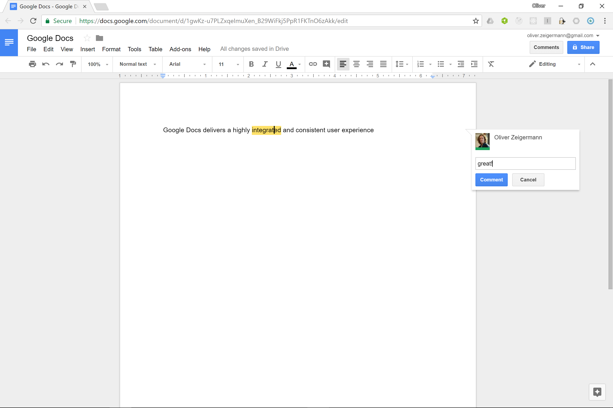
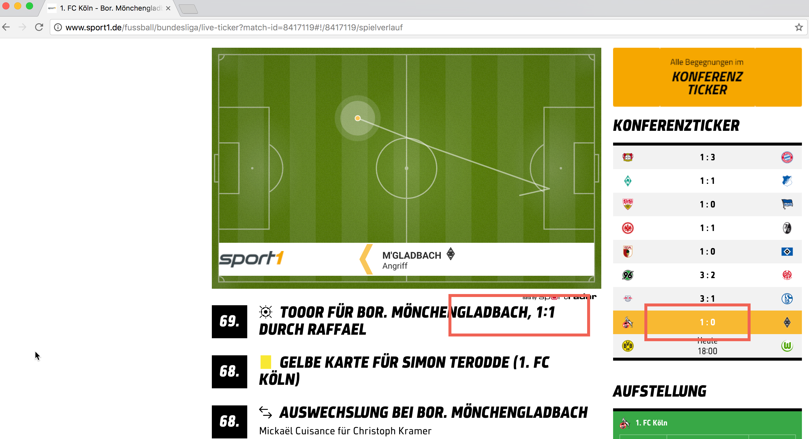
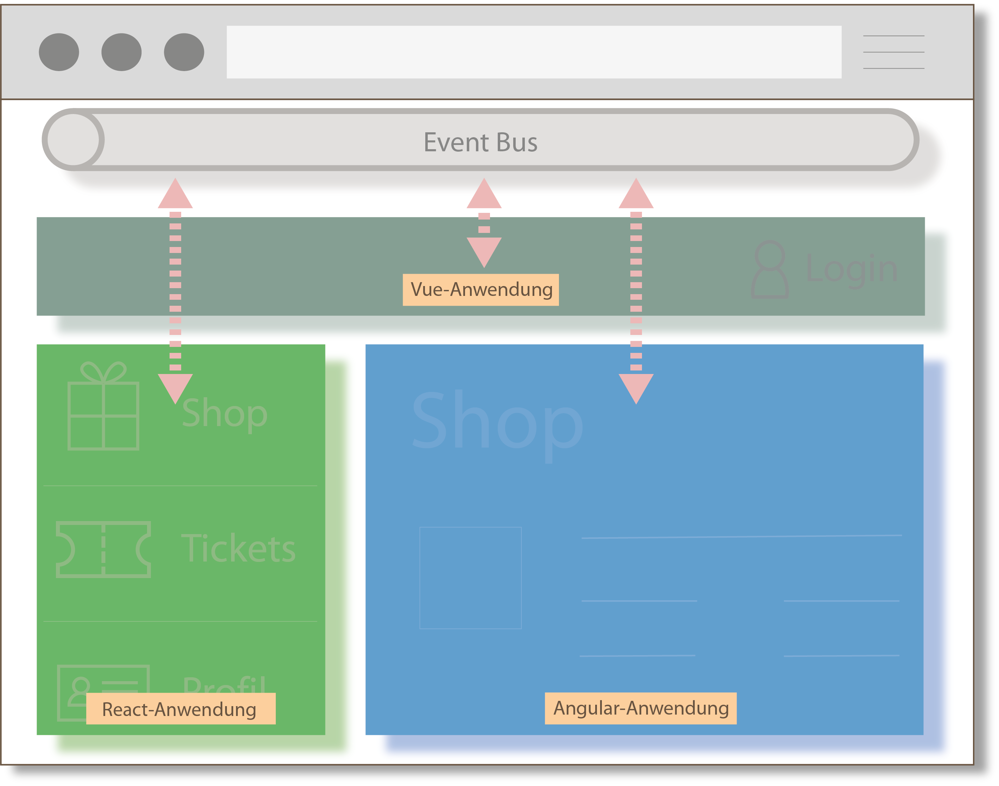

Olli
Mircro Frontends:
JavaScript Integration Patterns
Wir nehmen Frontend-Architektur nicht für voll
Zitate
- Frontend-Architektur: Ich dachte sowas gibt es gar nicht
- Das Frontend kloppen wir am Ende einfach irgendwie drauf
- Architektur für ein bisschen CSS-Pixel-Geschubse?
Teil 1
Im Spannungsfeld der Anforderungen
Nutzer möchten eine konsistente, gut bedienbare UI erleben

Axiom I
Beste UI / UX kann nur durch Single Page Applications (SPA), Mobile oder Desktop App erreicht werden
Logik muss nahe an Interaktion und Daten müssen nahe an Logik liegen
SPA
verschieben daher Hauptteile eurer Anwendung in den Client

- Server ist hauptsächlich Daten-Schnittstelle (JSON/REST API)
- Server kann Business Logic enthalten, diese kann aber komplett im Client liegen
- erlaubt Offline-Betrieb für SPAs (u.a. über Service Workers)
Problem: Größere Anwendungen können nicht von einem einzigen Team entwickelt werden

Micro Frontends...
https://www.thoughtworks.com/radar/techniques/micro-frontends
- sollen aus einzelnen Modulen zusammensetzbar sein
- sollen einzeln zu deployen sein
- sollen pro Modul am besten die freie Wahl von Technologie erlauben
Axiom II
Wartbarkeit und Skalierung im größeren Kontext ist nur durch Modularisierung erreichbar
Spannung zwischen Axiom I und II
Wenn man die Module für Wartbarkeit entkoppelt (Micro Frontends) muss man sie für beste UI/UX aus einem Guss wieder koppeln
Das geht das nicht ohne Kompromisse
- Erfahrung des Nutzers?
- Entwicklungsprozess?
https://twitter.com/missingcloudltd/status/826203153934729218
Es gibt keinen universell passenden Architektur-Ansatz
Daher...
Man muss die Anforderungen kennen und die müssen passen.
- Oliver Zeigermann
Teil 2
Lösungsansätze
Architektur-Ansätze
für Micro Frontends
Integration einzelner Micro Frontends (Module)...
-
über "normale" HTML Links

-
(Kudos an @axelfontaine für den Namen)zur Build-Zeit
-
im Browser
Ansatz 1
Links
Eigenständige Anwendungen über Links verbinden
- jedes Modul ist eine eigene Single Page Anwendung
- erlaubt Vertikalen wie eine klassische Web-App
- Module teilen keinen Zustand, aktualisieren einander nicht
Eigenständige Anwendungen in eigenständiger Darstellung

Jede Anwendung wird beim Öffnen komplett neu aufgebaut
Prominentes Beispiel: Outlook Online

UX-Schwächen, unterschiedliche Technologien, jede App wird anders dargestellt
Wechsel der App dauert (Service Workers können die Zeit ab 2. Aufruf vermindern)
Wie stecken wir wieder zusammen?
Kommunikation zwischen getrennten Anwendungen
Parameter-Übergabe
- Cookies: gut für Session Id, Authentication Tokens
- URL Parameter: begrenzte Länge, nicht alles möchte man in der URL haben, Bookmark und verschickbarer Link möglich
- Local Storage: Key/Value, bleibt bestehen bis zur expliziten Löschung
- Session Storage: Key/Value, nur gültig für aktuellen Tab
Alle Ansätze halten auch bei Reload den Zustand und funktionieren problemlos mit Back-Button
Echtzeit-Kommunikation zwischen Fenstern
- Long Polling: Erfordert Server Verbindung, kann viel Server Resourcen fressen
- Web Sockets: Erfordert Server Verbindung, geht immer noch nicht überall
- PWA Push: Erfordert Service Worker und Server
- Local Storage: Ohne Server wenn in demselben Browser
Outlook Online verwendet alle drei Server basierten Techniken
Nils
Ansatz 2
Majestic Modular Monoliths
Single Page Application
Single Page Application

Eine einzelne Single Page Application mit statischem Build
- Jedes Team entwickelt eigenes Modul
- Statischer Build integriert komplette Anwendung
- Deployment als Monolith
Implikationen
- Anwendung nutzt ein Framework mit einer Version
- Gemeinsame allgemeine Bibliothek sinnvoll (Buttons, Menüs, Formulare etc.)
- Zur Laufzeit Lazy-Loading möglich
- Für schnelle erste Seitendarstellung
Prominentes Beispiel: Google Docs
Keine architekturbedingten UX Probleme
Gemeinsame Anwendungen in gemeinsamer Darstellung
Wie stecken wir wieder zusammen?
Externes Zustandsmanagement
- Zustand, der über viele Komponenten verteilt ist, macht Programme kompliziert
- PubSub hat sich als schwer wartbar erwiesen
Typische Lösung: Redux
Redux ist unabhängig vom UI-Framework
Implementierungen existieren für alle wichtigen UI-Frameworks
- React: http://redux.js.org/docs/basics/UsageWithReact.html
- Angular: https://github.com/ngrx/store
- Vue: https://github.com/vuejs/vuex
- Web Components (Polymer): Empfohlene Implementierung des Global Mediator Pattern, https://twitter.com/DJCordhose/status/899943415353311232 https://tur-nr.github.io/polymer-redux/
Ansatz 3
Micro Components
Zusammensetzen der Anwendung im Browser
- Anwendung ist in logische Module aufgeteilt, die als ganze Anwendung zusammen laufen
- Integration zur Laufzeit
- Frameworks frei wählbar pro Modul
Eigenständige Anwendungen in gemeinsamer Darstellung
Jede Anwendung kann komplett eigenen Stack haben
Prominentes Beispiel: Spotify

https://www.quora.com/What-is-the-technology-stack-behind-the-Spotify-web-client/answer/Andreas-Blixt
https://www.quora.com/How-are-Spotify-Web-Player-components-developed
https://www.reddit.com/r/reactjs/comments/5sgkro/til_spotify_is_using_reactredux_in_their_web_app/
überraschende UX Schwächen, Apps nur gleichzeitig dargestellt, aber nicht komplett integriert
Beispiel: Technologie-Migration
Angular (Übersicht) nach React (Spielfeld und Ticker), Kommunikation über Long Polling
Wie stecken wir wieder zusammen?
Module im Browser zusammensetzen
- HTML script Tags und unterschiedliche Mount Points (wie bei Sport1)
- Web Components
- iFrames
Kommunikation über EventBus, Local Storage, direkte Listener oder gemeinsamer Zustand
Web Components
Custom Elements mit JavaScript ES6 Modul
// Custom Element
class MyElement extends HTMLElement {
connectedCallback() {
// render Angular / React component
}
}
customElements.define('my-element', MyElement);
<script>
// JavaScript module import
import 'my-element';
</script>
<div>
<my-element greeting="Hello"></my-element>
</div>
iFrame
Beispiel: http://djcordhose.github.io/architecture/code/integration/
Lädt komplett isolierte Anwendung
<iframe height="300" width="500"
src="http://djcordhose.github.io/architecture/code/integration/iframe.html"
sandbox="allow-scripts allow-top-navigation allow-same-origin"></iframe>
- Kein geteiltes Styling
- Einbetten mit richtiger Größe ein Albtraum
- Kommunikation mit Außenwelt über PubSub
Globaler Event Bus
Komponenten publizieren und können sich auf Events registrieren
Kommunikation z.B. über window.postMessage
Bewertung
Ansätze sind nicht wechselseitig exklusiv
- Seite einer Link-App kann eine Micro Components App sein
- Teil einer Micro Components kann ein Majestic Modular Monolith sein
- Seite einer Link-App kann ein Majestic Modular Monolith sein (Google Drive vs Google Docs)
Urteil
-
Links:
bester Entwicklungsprozess
- beste Story für Modularisierung, Migration, Deployment
- schwächste Integration von UI/UX
-
Majestic Modular Monoliths:
beste Erfahrung für den Nutzer
- schwächste Story für unabhängige Teams
- bestes und konsistentestes UX/UI, starke Stories für State Management
-
Micro Components:
Kompromiss
- Technik für Integration im Browser nicht wirklich überzeugend
- UX/UI gut für Intranet oder Desktop wegen Größe der Anwendung
Vielen Dank!
Es gibt keine perfekte Architektur für jeden Satz von Anforderungen
Du musst deine Anforderungen kennen und dabei ehrlich zu dir sein